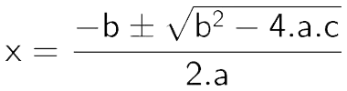

Fórmula de Bhaskara
A fórmula de Bhaskara é um método resolutivo para equações do segundo grau que permite determinar as soluções desse tipo de equação a partir de seus coeficientes. De posse desses coeficientes, basta substituí-los na fórmula de Bhaskara e realizar as operações matemáticas indicadas por ela para encontrar os valores de x da equação.
Equação
Equações do segundo grau são equações definidas por polinômios de grau 2. Isso significa que, entre todas as incógnitas desse polinômio, pelo menos uma será elevada ao quadrado. Toda equação do segundo grau, em sua forma normal, estará escrita da seguinte maneira:

Fórmula original
A fórmula de Bhaskara foi criada a partir do método de completar quadrados. Seguindo esse método para os coeficientes genéricos “a”, “b” e “c”, obtém-se a seguinte expressão:
Dividindo a formula
Por questões didáticas, essa fórmula é ensinada em duas etapas: fórmula do discriminante e fórmula de Bhaskara.
Discriminante
A fórmula do discriminante é definida pela expressão no interior da raiz quadrada na fórmula de Bhaskara em sua forma original. O discriminante é representado pela letra grega Δ (delta) e é definido da seguinte maneira: Δ = b2 - 4ac
O valor de Δ é chamado de discriminante porque é possível extrair algumas informações a respeito de uma equação do segundo grau a partir dele. Portanto, pode-se dizer que Δ discrimina ou classifica equações do segundo grau da seguinte maneira:
- Se Δ < 0, a equação do segundo grau não possui raízes reais;
- Se Δ=0, a equação do segundo grau uma raiz real;
- Se Δ> 0, a equação do segundo grau possui duas raízes reais.
A fórmula de Bhaskara
De posse do valor numérico de Δ, basta utilizar a fórmula de Bhaskara para encontrar os resultados (ou raízes) da equação do segundo grau. Para utilizá-la, basta substituir coeficientes e valor de Δ na fórmula acima e realizar as operações indicadas. Contudo, observe a existência do símbolo “±”. Esse símbolo indica que essa fórmula deve ser calculada uma vez para +√Δ e uma segunda vez para –√Δ.